정보통신산업기사 (2015-06-06 기출문제)
1과목: 디지털전자회로
1. 다음 중 전원주파수 60[Hz]를 사용하는 정류회로에서 60[Hz]의 맥동주파수를 나타내는 회로 방식은?
- 3상 반파 정류
- 3상 전파 정류
- 단상 반파 정류
- 단상 전파 정류
(정답률: 70%)

2. 다음 그림과 같은 초크 입력형 평활회로에서 출력측의 맥동 함유율을 작게 하려고 할 때 적합한 방법은?
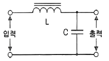
- L과 C를 모두 크게 한다.
- L과 C를 모두 적게 한다.
- L을 크게 C를 작게 한다.
- C를 크게 L을 작게 한다.
(정답률: 82%)
3. 다음 중 정류회로에서 출력전압 변동의 원인에 해당되지 않는 것은?
- 신호원 전압
- 부하 전류
- 주위 온도
- 트랜스 크기
(정답률: 74%)
4. 다음 중 차동 증폭 회로의 특징이 아닌 것은?
- 증폭도가 보통 방식보다 작다.
- 작은 온도 변화에도 동작이 안정하다.
- 교류증폭은 불가능하며, 직류만 증폭이 가능하다.
- 부품의 절대치가 변화해도 증폭이 거의 안정하며, 대역폭이 넓다.
(정답률: 46%)
5. 궤환이 없을 때의 증폭도가 100인 증폭회로에 궤환율 -0.01의 궤환을 걸어주면 증폭도는 얼마인가?
- 5
- 50
- 500
- 5,000
(정답률: 57%)
6. FET에서 VGS=0.7[V]로 일정하게 유지하고 VDS를 6[V]에서 10[V]로 ID가 10[mA]에서 12[mA]로 변하였을 경우 드레인 저항(rd)은 얼마인가?
- 0.5[kΩ]
- 1.4[kΩ]
- 2[kΩ]
- 5[kΩ]
(정답률: 64%)
7. 다음 중 C급 증폭기의 용도로 적합한 것은?
- 완충 증폭기
- Push-Pull 증폭기
- 저주파 증폭기
- RF전력 증폭기
(정답률: 69%)
8. 다음 중 LC 발진회로의 종류가 아닌 것은?
- 톱니파 발진기
- 하틀리 발진기
- 콜피츠 발진기
- 동조형 반결합 발진기
(정답률: 73%)
9. 발진회로에서 안정적인 발진조건으로 옳은 것은? (단, A=증폭도, β=되먹임률)
- Aβ = 1
- Aβ＜ 0
- Aβ ＞0
- Aβ ≠ 1
(정답률: 89%)
10. PCM 통신 방식에서 송신 과정으로 맞는 것은?
- 표본화 → 부호화 → 양자화 → 압축
- 표본화 → 양자화 → 부호화 → 압축
- 표본화 → 부호화 → 압축 → 부호화
- 표본화 → 압축 → 양자화 → 부호화
(정답률: 76%)
11. 아날로그 TV의 영상신호 전송에 사용되는 방식으로 한 쪽 측파대의 일부를 남겨 통신하는 방식은?
- VSB
- DSB
- SSB
- FSK
(정답률: 76%)
12. 정(+)으로 바이어스 된 리미터 회로와 부(-)로 바이어스 된 리미터 회로를 결합하여 입력신호의 일부분을 추출하는 회로는?
- 클리퍼(Clipper)
- 클램퍼(Clamper)
- 슬라이서(Slicer)
- 슈미트 트리거(Schmitt Trigger)
(정답률: 59%)
13. 다음 중 슈미트 트리거(Schimit Trigger) 회로의 출력에 나타나는 파형의 특성으로 옳은 것은?
- 백 스윙(Back-Swing) 현상
- 슈우트(Shoot) 현상
- 히스테리시스(Hysterisis) 현상
- 싱잉(Singing) 현상
(정답률: 86%)
14. 두 개의 입력파형 A, B에 대하여 출력 파형 Y가 그림과 같을 때 어떤 게이트를 통과한 것인가?
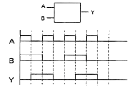
- OR
- NOR
- NAND
- XOR
(정답률: 70%)
15. 다음 J-K 플립플롭의 여기표(Excitation Table)의 각각의 괄호 안에 맞는 답은? (단, X는 Don't care를 의미하며, J-K 플립플롭의 이전 값은 초기화된 것으로 가정한다.)
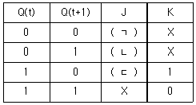
- ㈀ = 1, ㈁ = X, ㈂ = 0
- ㈀ = 0, ㈁ = X, ㈂ = 1
- ㈀ = 0, ㈁ = 1, ㈂ = X
- ㈀ = 1, ㈁ = 0, ㈂ = X
(정답률: 81%)
16. 십진수 673을 16진수로 바꾸면?
- 2B1
- 2A1
- 291
- 2C1
(정답률: 82%)
17. 다음 중 BCD 부호를 10진수로, 2진수를 8진수나 16진수로 변환하기 위해 사용되는 회로는?
- 디코더
- 인코더
- 멀티플렉서
- 디멀티플렉서
(정답률: 79%)
18. 난수 발생 회로에서 n비트의 레지스터를 사용할 경우 발생하는 난수는 몇 개인가?
- n-1개
- 2n-1개
- 2n+1개
- n+1개
(정답률: 74%)
19. 다음 그림과 같은 D형 플립플롭으로 구성된 카운터 회로의 명칭은?
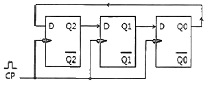
- 3진 링카운터
- 6진 링카운터
- 8진 시프트카운터
- 16진 시프트카운터
(정답률: 77%)
20. 16[bit] 데이터 버스와 10[bit] 주소 버스를 갖고 있는 마이크로프로세서에 연결될 수 있는 최대 메모리 용량[byte]은?
- 1,024[byte]
- 2,048[byte]
- 4,096[byte]
- 8,192[byte]
(정답률: 69%)
2과목: 정보통신기기
21. 다음 중 직접 또는 간접으로 사람이 알아볼 수 있는 데이터를 컴퓨터에서 처리 가능한 전기적 신호로 변환하는 장치는?
- 플로터
- OCR
- 프린터
- CRT
(정답률: 58%)
22. 전송 제어 장치(TCU)의 구성요소 중 회선 접속부를 통해 들어온 데이터를 직렬과 병렬 신호로 변환하는 것은?
- 신호 변환부
- 직ㆍ병렬 신호부
- 회선 제어부
- 입ㆍ출력 장치부
(정답률: 53%)
23. 다음 데이터 처리방식에 따른 통신제어방치(CCU)의 분류 중 대규모 데이터 통신시스템에 많이 사용되는 것으로 컴퓨터에 걸리는 부하가 가장 적은 방식은?
- 비트 버퍼 방식
- 메시지 버퍼 방식
- 문자 버퍼 방식
- 블록 버퍼 방식
(정답률: 76%)
24. 다음 중 집중화기(Concentrator)의 네트워크 통신 기능이 아닌 것은?
- 링크 서비스
- 프로토콜 변환
- 데이터 압축
- 데이터 암호화
(정답률: 68%)
25. 다음 중 WAN(Wide Area Network)의 전송 방식이 아닌 것은?
- Leased Line
- Circuit Switched
- Packet Switched
- Message Switched
(정답률: 72%)
26. 다음 중 OSI 7 계층과 네트워크 기기 간의 연결이 올바른 것은?
- Transfer Layer - Repeater
- Network Layer - Hub
- Data Layer - Bridge
- Physical Layer - Router
(정답률: 84%)
27. 다음 중 경로 설정 기능을 가진 장비는?
- Bridge
- Modem
- Repeater
- Router
(정답률: 85%)
28. 초기 전화망은 각각의 전화기가 모두 연결된 형태로 구성되었다. 이와 같은 구성의 경우, 전화기 n개를 연결하기 위해 필요한 회선의 개수는?
- (n-1)/2
- n(n-1)/2
- (n+1)/2
- n(n+1)/2
(정답률: 86%)
29. 다음 보기의 내용은 어떤 장비에 대한 설명인가?
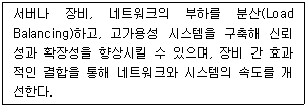
- L2 스위치
- L3 스위치
- L4 스위치
- L7 스위치
(정답률: 80%)
30. 다음 중 VoIP 서비스에 대한 설명으로 틀린 것은?
- 음성과 데이터를 하나의 망으로 전송한다.
- 인터넷 프로토콜과 연계하여 다양한 부가서비스의 제공이 가능하다.
- 기존의 데이터망을 이용하므로 통신요금이 저렴하다.
- 각각의 통화는 회선을 독점으로 점유하기 때문에 대역폭 사용이 비효율적이다.
(정답률: 91%)
31. 화상정보를 특정 목적으로 특정의 수신자에게 전달하여 보안, 감시 등 분야에 응용하는 화상정보 시스템은?
- CCTV
- CATV
- HDTV
- DTV
(정답률: 91%)
32. 다음 조건에 해당하는 전화기의 접속률은?
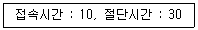
- 25[%]
- 40[%]
- 90[%]
- 133[%]
(정답률: 83%)
33. 다음 중 TV에 인터넷 접속 기능을 결합, 각종 앱(Application)을 설치해 웹서핑 및 VOD 시청, 소셜 네트워크 서비스(Social Networking Service), 게임 등의 다양한 기능을 활용할 수 있는 기기는?
- HDTV
- OLED TV
- PDP TV
- SMART TV
(정답률: 90%)
34. 지구와 정지위성까지의 거리가 약 36,000[km]라고 할 때 지구에서 발사한 전파가 위성에서 지구까지 돌아오는 시간은 대략 얼마인가? (단, 위성 중계기 내에서의 지연시간은 무시하고, 전파속도는 3×108[m/sec]로 한다.)
- 120[ms]
- 360[ms]
- 240[ms]
- 180[ms]
(정답률: 76%)
35. 위성의 통신영역은 위성의 고도(h)와 지구국 안테나의 통신가능 최저앙각(θ)의 함수관계로 표시할 수 있다. 다음 중 수식으로 옳은 것은? (단, R : 지구의 반경, β : 커버하는 범위의 중심각)
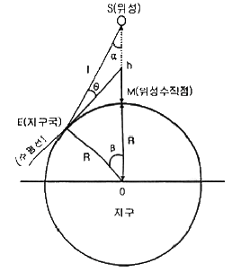
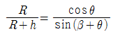
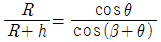
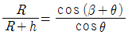
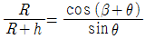
(정답률: 67%)
36. 변조방식에 있어서 아날로그 신호의 크기에 따라 반송파의 주파수가 변화하는 방식은?
- 주파수변조(FM)
- 위상변조(PM)
- 진폭변조(AM)
- 델타변조(DM)
(정답률: 84%)
37. TV 채널대역 중 영상신호와 음성신호 대역으로 사용되지 않는 부분을 이용하는 것은?
- 텔레텍스트
- 비디오텍스
- 텔렉스
- 텔레텍스
(정답률: 75%)
38. 다음 중 멀티미디어의 특징이 아닌 것은?
- 두 가지 이상의 매체를 동시에 사용한다.
- 사용자와 시스템 간에 상호작용을 해야 한다.
- 시스템을 사용해 정보를 얻을 수 있어야 한다.
- 두 가지 이상의 시스템으로 매체가 통제되어야 한다.
(정답률: 83%)
39. 정보 가전이 네트워크로 연결되어 기기, 시간, 장소에 구애 받지 않고 다양한 서비스를 제공하는 통신 서비스는?
- ViBro
- DMB
- DTV
- Home Network
(정답률: 88%)
40. 다음 중 광케이블이 집안까지 연결되는 것은?
- xDSL
- FTTH
- LAN
- TRS
(정답률: 78%)
3과목: 정보전송개론
41. 다음 중 S/N비가 가장 우수한 변조방식은?
- DM
- PCM
- DPCM
- ADPCM
(정답률: 73%)
42. 다음 중 스펙트럼 확산 기술을 응용한 다중화 방식으로 보내고자 하는 신호를 그 주파수 대역보다 훨씬 넓은 주파수 대역으로 확산시켜 전송하는 방식은?
- FDMA
- TDMA
- STDMA
- CDMA
(정답률: 68%)
43. 8진 PSK(Phase Shift Keying)에서 방송파 간의 위상차는?
- 25도
- 45도
- 90도
- 125도
(정답률: 85%)
44. 다음 중 1비트를 사용하며, 2레벨 양자화를 사용하는 변조방식은?
- TDM
- DPCM
- PCM
- DM
(정답률: 77%)
45. 일반적인 전송선로에서 저항을 R, 인덕턴스를 L, 정전용량을 C, 컨덕턴스를 G라 할 때, 무왜곡 전송의 조건으로 옳은 것은?
- RL=GC/2
- RC=LG
- RG=LC
- T+L=C+G
(정답률: 79%)
46. 다음 중 광통신에서 사용되는 발광소자는?
- VD(Varactor Diode)
- PIN 다이오드(PIN Diode)
- APD(Avalanche Photo Diode)
- LD(Laser Diode)
(정답률: 80%)
47. 다음 중 광케이블의 커넥터 다중접속이 용이한 것은?
- 리본형
- 스트랜드형
- 슬롯트형
- 단일 유니트형
(정답률: 84%)
48. 어떤 신호가 전송매체상의 A지점과 B지점 구간에서 전송되는 경우, 전력 레벨이 1/2로 감소하였다면, A-B 구간에서 발생하는 손실은 약 얼마인가?
- 1[dB]
- 2[dB]
- 3[dB]
- 4[dB]
(정답률: 71%)
49. 다음 중 동기식 전송방식이 아닌 것은?
- 비트 동기방식
- 문자 동기방식
- 스트로보 동기방식
- 프레임 동기방식
(정답률: 77%)
50. 디지털 변조에 의해 디지털 신호의 주파수대역을 옮겨 전송하는 방식은?
- Broadband 전송
- Baseband 전송
- PCM 전송
- SSB 전송
(정답률: 78%)
51. 다음 중 공통선 신호방식(SS7)에 대한 설명으로 옳지 않은 것은?
- 디지털 원거리 통신 네트워크에서 사용하도록 최적화시킨다.
- 손실이나 중복이 없는 고신뢰성 수단을 제공한다.
- 아날로그 채널에서 64[kbps]의 속도로 동작하기에 적합하도록 한다.
- 패킷교환 네트워크에서 수행되는 기능을 규정하며, 이는 하드웨어를 사용하도록 규제한다.
(정답률: 66%)
52. 다음 중 혼합형 동기식 전송 방식의 설명으로 옳지 않은 것은?
- Start Bit와 Stop Bit를 가진다.
- 문자와 문자 사이에 휴지 간격이 있을 수 있다.
- 일반적으로 비동기식 전송보다 느리다.
- 송신측과 수신측이 동기 상태에 있어야 한다.
(정답률: 76%)
53. 다음 중 데이터의 암호화와 압축을 수행하는 계층은?
- 응용 계층
- 표현 계층
- 세션 계층
- 전송 계층
(정답률: 83%)
54. 감시형식 프레임(S frame)에서 제어부의 8개의 비트 b1~b8 중 b1~b4가 1010으로 구성되어 있다면 이는 어떤 기능을 의미하는가?
- RR(Receive Ready)
- RNR(Receive not Ready)
- REJ(Reject)
- SREJ(Selective Reject)
(정답률: 70%)
55. ISO에서 제안한 LAN 프로토콜 중 논리링크 제어 및 매체 액세스 제어를 기술하고 있는 계층은 OSI의 어느 계층에 해당하는가?
- 물리 계층
- 데이터링크 계층
- 네트워크 계층
- 전송 계층
(정답률: 72%)
56. C class의 네트워크 200.13.95.0의 서브넷 마스크가 255.255.255.224일 경우 사용 가능한 최대 가능한 호스트 수는?
- 6
- 14
- 30
- 62
(정답률: 77%)
57. IPv6의 주소체계는 몇 비트로 구성되어 있는가?
- 32
- 48
- 64
- 128
(정답률: 87%)
58. 데이터를 전송하는 방법 중 한 장비에서 다른 한 장비로만 메시지를 전송하는 방식은?
- 유니캐스트
- 브로드캐스트
- 멀티캐스트
- 애니캐스트
(정답률: 79%)
59. 오류가 검출될 경우 송신측에 재전송을 요청하지 않고 스스로 오류를 정정하는 방식은?
- Forward Error Correction
- ARQ
- CRC
- Flow Control
(정답률: 64%)
60. 두 부호어의 비트열이 A=(100100), B=(010100)일 대 두 부호어의 해밍거리는?
- 1
- 2
- 3
- 4
(정답률: 86%)
4과목: 전자계산기일반 및 정보설비기준
61. 8진수 3456.71을 2진수로 변환한 표현으로 옳은 것은?
- 011101101110.111001
- 011100101110.111001
- 011100111110.111001
- 011101010111.100111
(정답률: 73%)
62. 다음 중 중앙처리장치(CPU)의 기능이 아닌 것은?
- 산술 연산과 논리 연산을 함께 담당한다.
- 자료의 입출력을 제어하는 역할을 수행한다.
- 주기억 장치에 기억되어 있는 프로그램 명령어를 호출하여 해독한다.
- 연산의 실행을 위해 보조 기억 장치에서 데이터를 직접 출력 장치로 보낸다.
(정답률: 62%)
63. 마이크로컨트롤러의 주변 장치들을 제어하거나 주변 장치의 상태를 읽기 위해 할당된 특수 목적 레지스터는?
- 누산기(Accumulator)
- PC(Point Counter)
- DR(Data Register)
- SFR(Special Function Register)
(정답률: 70%)
64. 다음 중 출력장치와 메모리 사이의 데이터 전송시, 가장 빠른 방식은?
- 프로그램 I/O 방식
- 인터럽트 I/O 방식
- 시리얼 I/O 방식
- DMA(Direct Memory Access) 방식
(정답률: 84%)
65. 다음 중 임베디드 소프트웨어의 일반적인 특징이 아닌 것은?
- 실시간 처리
- 제한된 자원의 효율적 사용
- 높은 신뢰성
- 광범위한 범용성
(정답률: 62%)
66. 다음 중 주기억장치를 구성하고 있는 기억소자의 기능이 아닌 것은?
- 읽기 기능
- 쓰기 기능
- 삭제 기능
- 칩 선택 기능
(정답률: 57%)
67. 다음 중 데드락(Deadlock)을 발생시키는 원인이 아닌 것은?
- 점유와 대기(Hold and Wait)
- 순환 대기(Circular Wait)
- 상호 배제(Mutual Exclusion)
- 선점(Preemption)
(정답률: 79%)
68. 다음 보기의 전산시스템 개발 단계를 순서대로 나열한 것은?
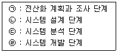
- ㉠-㉡-㉢-㉣
- ㉠-㉢-㉡-㉣
- ㉢-㉠-㉡-㉣
- ㉢-㉡-㉠-㉣
(정답률: 78%)
69. 다음 중 다중-사용자 또는 다중-작업시스템에서 주기억장치의 관리를 위하여 운영체제가 하는 일이 아닌 것은?
- 각 프로세서에게 주기억장치를 얼마나 할당할 것인가를 결정
- 주기억장치 용량이 부족할 때 주기억장치에 적재되어 있는 현재 사용 중인 부분을 선택하여 보조기억장치에 옮겨 놓는 일
- 주기억장치의 빈 공간이 어디에 얼마나 있는지를 기록, 유지하는 일
- 각 프로세서가 자신에게 할당된 영역이 아닌 다른 부분을 접근할 때 이를 보호하는 일
(정답률: 55%)
70. 다음 중 인터럽트 우선순위 방식이 아닌 것은?
- Subroutine Call
- Polling
- Proority Encoder
- Daisy Chain
(정답률: 47%)
71. 다음의 괄호 안에 들어갈 내용으로 옳은 것은?
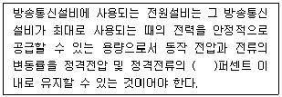
- ±5
- ±10
- ±15
- ±20
(정답률: 71%)
72. 다음 중 미래창조과학부장관이 전기통신기본계획을 수립하고자 할 때 미리 관계 행정기관의 장과 협의하여야 하는 사항으로 옳은 것은?
- 전기통신의 이용효율화에 관한 사항
- 전기통신의 질서유지에 관한 사항
- 전기통신사업에 관한 사항
- 전기통신설비에 관한 사항
(정답률: 67%)
73. 다음은 구내통신선로설비의 설치에 관한 사항이다. 괄호 안에 들어갈 내용으로 옳은 것은?
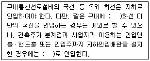
- 3, 지하
- 5, 지하
- 3, 옥외
- 5, 옥외
(정답률: 73%)
74. 다음 중 '통신선로설비공사'에 해당되지 않는 것은?
- 지능망설비 공사
- 통신케이블설비 공사
- 통신관로설비 공사
- 통신구설비 공사
(정답률: 82%)
75. 정보통신공사업법의 용어 정의에서 정보통신설비의 설치 및 유지ㆍ보수에 관한 공사와 이에 따르는 부대공사로서 대통령령이 정하는 공사를 무엇이라 하는가?
- 정보통신공사
- 정보통신설비공사
- 통신관로설비공사
- 선로설비공사
(정답률: 55%)
76. 다음 중 방송통신설비에서 “옥외설비”의 안전성 및 신뢰성 확보를 위한 항목으로 옳지 않은 것은?
- 풍해대책
- 낙뢰대책
- 동결대책
- 분진대책
(정답률: 84%)
77. 다음 중 정보통신공사 감리원의 자격기준은 등급으로 구분하여 정하는데, 등급의 종류에 해당되지 않는 것은?
- 특급감리원
- 고급감리원
- 중급감리원
- 하급감리원
(정답률: 85%)
78. 자기 또는 타인에게 이익을 주거나 타인에게 손해를 가할 목적으로 전기통신설비에 의하여 공연히 허위의 통신을 한 자에 대한 벌칙으로 옳은 것은?
- 1년 이하의 징역 또는 1천만원 이하의 벌금
- 3년 이하의 징역 또는 3천만원 이하의 벌금
- 5년 이하의 징역 또는 5천만원 이하의 벌금
- 10년 이하의 징역 또는 1억원 이하의 벌금
(정답률: 76%)
79. 다음 중 통신ㆍ방송ㆍ인터넷이 융합된 멀티미디어 서비스를 언제 어디서나 고속ㆍ대용량으로 이용할 수 있는 정보통신망은?
- 초고속 정보통신망
- 초고속 국가정보망
- 광대역 국가정보망
- 광대역통합정보통신망
(정답률: 80%)
80. 다음 문장은 무엇에 대한 정의인가?
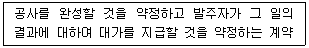
- 수급
- 도급
- 용역
- 시공
(정답률: 73%)